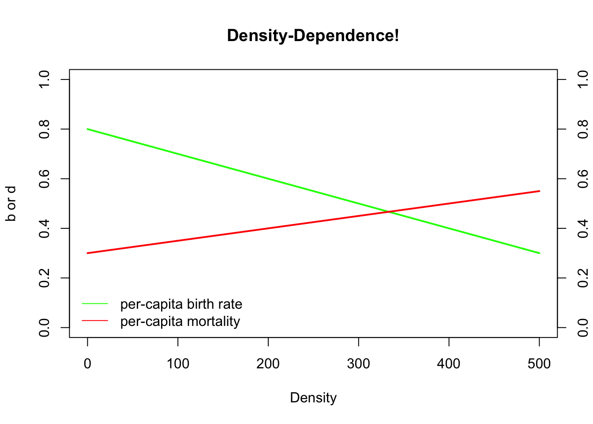

Regulación de Poblaciones
BIOL4558
Agosto 2021
¿Qué es la densidad denpendiente (D-D)?
La semana pasada pasamos por las matemáticas del crecimiento exponencial. Esta semana exploraremos modelos básicos de dependencia de la densidad. El crecimiento exponencial, como ha visto, conduce a la locura. No es sostenible. Como señaló Malthus, los recursos son finitos y, tarde o temprano, las poblaciones en crecimiento exponencial encontrarán sus límites.
Densidad : En D-D, * densidad * se refiere básicamente al número de individuos con los que estás compitiendo por alimentos y otros recursos. ¡Cuanto más compita con otros de su propia especie, menos favorables serán sus tasas vitale (por ejemplo, tasa de mortalidad per cápita, d, aumentos o tasa de natalidad per cápita, b, disminuciones)! A medida que sube N, las tasas vitales empeoran.
Regulación!
En primer lugar, mencionamos en nuestra discusión sobre ecología de sistemas que las retroalimentaciones positivas no son sostenibles, porque los aumentos significan aumentos más rápidos, significan aumentos más rápidos, etc. (un círculo vicioso). La dependencia de la densidad es un tipo de retroalimentación, pero NO es una retroalimentación positiva. Así es, ¡es un comentario negativo! Lo que también se conoce como retroalimentación estabilizadora. Como discutimos antes, las retroalimentaciones negativas son esenciales para sistemas bien regulados. Recuerde el ejemplo de la homeostasis en la biología de los organismos. Si el nivel de azúcar en sangre sube, el cuerpo trabajará para reducirlo y viceversa.
Lo mismo ocurre con las poblaciones. En una población regulada, un aumento en la abundancia provocará una disminución en la tasa de crecimiento de la población y una disminución en la abundancia provocará un aumento en la tasa de crecimiento de la población. En ecología de poblaciones (y especialmente en ciencias pesqueras), esta última a menudo se denomina crecimiento compensatorio. No se puede tener una población regulada sin algún tipo de retroalimentación negativa.
thought Q: What are some possible mechanisms of density-dependence? That is, why could vital rates become less favorable at higher densities?
thought Q: Are all wild populations regulated? Is density-dependent population regulation a “law of nature”?
Logistic growth
Logistic growth can be described mathematically by the following equation:
\(\Delta N = r \cdot N_t \cdot \left ( 1 - \frac{N}{K} \right )\)
This is probably the second most important equation of population ecology (after basic exponential growth!).
We will go into more detail in lab, but Let’s break this equation down a bit.
The first part of this equation looks familiar, right?
\(\Delta N = r \cdot N_t\)
What about the second part,
\(\left ( 1 - \frac{N}{K} \right )\)
You can think about \(\frac{N}{K}\) as the used portion of carrying capacity
By the same token, you can think about \(\left ( 1 - \frac{N}{K} \right )\) as the unused portion of carrying capacity.
When carrying capacity is mostly unused, population growth resembles basic exponential growth!
When carrying capacity is mostly used up, population growth resembles, well…, no growth at all!
Thought Q: Given the two above statements, can you figure out what population dynamics should look like under logistic growth, starting with a very small population?

Carrying capacity is an equilibrium point!
A stock-flow system is at an equilibrium point when [Flows In] are equal to [Flows Out]. That is, if opposing forces cancel each other out.
As Gotelli shows, and we will go over in detail, you can derive the logistic growth equation by making b and d (from the standard population growth equation) both linearly dependent on density:
\(b=b_{max}-a*[Density]\)
where \(b_{max}\) is the maximum, or ideal, per-capita birth rate and \(a\) is the density dependence term.
Similarly,
\(d=d_{min}+c*[Density]\)
where \(d_{min}\) is the minimum, or ideal, per-capita death rate (1-maximum survival rate) and \(c\) is the density dependence term.
We can plot these equations out in R:
Density <- seq(0,500,1) # create a sequence of numbers from 0 to 500, representing a range of population densities
## CONSTANTS
b_max <- 0.8 # maximum reproduction (at low densities)
d_min <- 0.3 # minimum mortality
a <- 0.001 # D-D terms
c <- 0.0005
b <- b_max - a*Density
d <- d_min + c*Density
plot(Density,b,type="l",col="green",lwd=2,ylim=c(0,1),main="Density-Dependence!",ylab="b or d")
points(Density,d,type="l",col="red",lwd=2)
axis(4,at=seq(0,1,0.2))
#mtext("d",4)
legend("bottomleft",col=c("green","red"),lty=c(1,1),legend=c("per-capita birth rate","per-capita mortality"),bty="n")
Thought Q: What is the equilibrium point in this system? That is, what is the (non-zero) abundance/density at which population growth is equal to zero??
This equilibrium is known as K, or carrying capacity?

Stable and non-stable equilibria
A stable equilibrium, when perturbed, returns to the equilibrium point
A non-stable equilibrium, when perturbed, does NOT return to the equilibrium point
Is the image on the left a stable or a non-stable equilibrium??
What about the image on the right?
What about K, or carrying capacity?
Let’s find out!
In-class exercise: logistic growth
First of all, from now on try to start saving your working InsightMaker models, since we will often be building from previous models (so we don’t have to start from scratch every class!). To build off of a previous Insight, open a previous Insight (e.g., your basic exponential growth model– or clone this model) and choose “Clone Insight” in the upper right corner to create a copy that you can edit.
Here is the scenario we will model: both b and d are density-dependent. We will replicate the model from the R code and figure above- this time in InsightMaker!
CONSTANTS
- [Maximum per-capita birth rate] = 0.8 individuals per individual per year
- [Minimum per-capita death rate] = 0.3 individuals per individual per year
- [Density dependence on fecundity] (a) = 0.001
- [Density dependence on mortality] (c) = 0.0005 EQUATIONS
- [Per-capita birth rate] = [Maximum per-capita birth rate] - [Density dependence on fecundity] * [Turtles]
- [Per-capita death rate] = [Minimum per-capita death rate] - [Density dependence on mortality] * [Turtles] How can we do this in InsightMaker?
Load a basic exponential-growth model. Rename the main [Stock] Box Turtles. This [Stock] should have two [Flows], one [Flow In] named Births and one [Flow Out] named Deaths. Both Births and Deaths should be defined as the product of turtles and per-capita rates, respectively called Births per capita and Deaths per capita (each defined on the canvas as [Variables]). This model should be very familiar!!
Initialize the population of Turtles to 5 (way below carrying capacity).
Make four new [Variables] on the canvas, to represent the four constants in our model.
Set the Maximum per-capita birth rate to 0.8 (turtles produced per turtle per year). Set the Minimum per-capita Death rate to 0.3. Set the Density dependence on fecundity to 0.001. Set the Density dependence on mortality to 0.0005.
Make the appropriate connections, as in the figure above, and use the equation window to make sure the equations are correct.
Change the settings so that the simulation runs for 100 years.
Your model should look something like this! (if you don’t already have a model like this, clone this model)

- Run this model. Does the model behave as you would expect?
Q: What happens if population size starts out at carrying capacity? [tophat]
Q: What happens if population size starts out above carrying capacity? [tophat]
Q: Is this a stable equilibrium? [tophat]
Q: Can a wild population ever be at a non-stable equilibrium? What about a stable equilibrium? Why is it important to know about non-stable equilibria?
- Consider the basic logistic growth equation:
\(\Delta N = r \cdot N_t \cdot \left ( 1 - \frac{N}{K} \right )\)
Pull up your InsightMaker model for basic logistic growth with an \(r_{max}\) term (double-headed arrow). Or you can clone it from here. It should look something like this:

Make your initial population size very small compared to carrying capacity.
Q: What happens if \(r\) is zero? What happens to carrying capacity?
Q: Which population is more likely to be found at or near K in nature? A population with very large \(r\) or very small \(r\)?
Q: How does this discussion relate to the concept of “r-selected” and “K-selected” species?
Q: Is a high value of \(r\) good or bad for conservation?